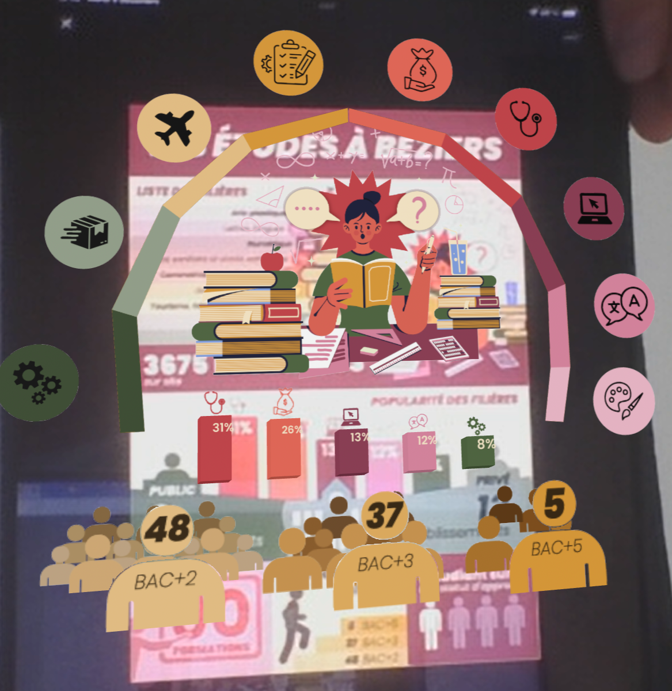
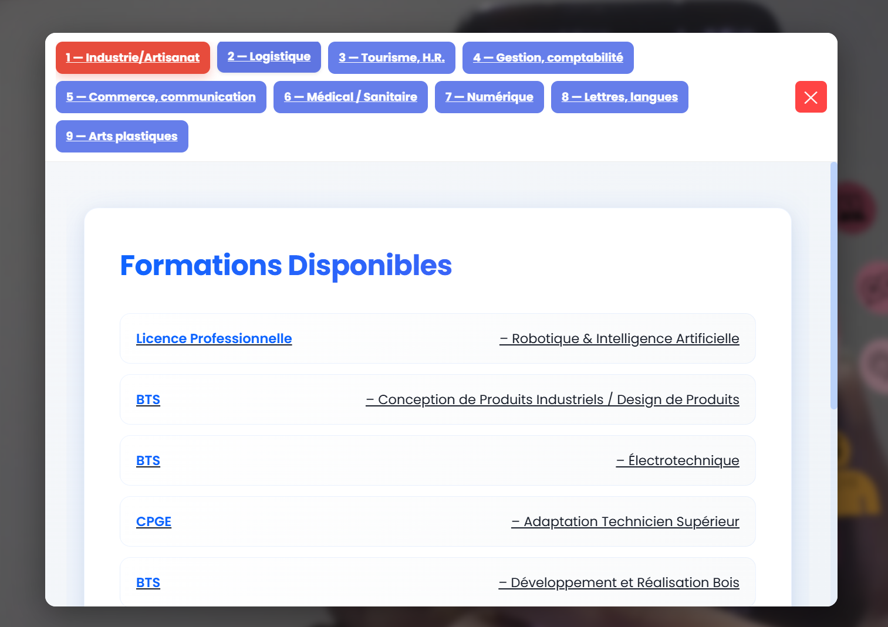

AR
Catégorie : Créations 2D
Détails du Projet
Concevoir des visualisations de données pour le web et un support animé
L'objectif était de réaliser une infographie informative et attrayante sur les formations supérieures disponibles à Béziers, puis de l'intégrer en réalité augmentée pour une expérience et animé.
Logiciels utilisés : Adobe Photoshop, Visual Studio Code, Illustrator
Compétences : Infographie, développement web...

Affiche finale sur les études supérieures à Béziers


Document de base sur l'enseignement supérieur biterrois

Partie en Réalitée Augmentée(AR) intéractif.

Intéractions des icons vers les formations liées.